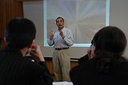
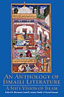
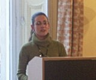
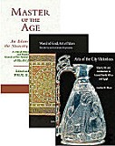
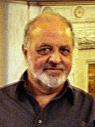

News Archive, 2008
 Ethique dans les Sphères Publiques Musulmanes
Ethique dans les Sphères Publiques Musulmanes Décembre 2008
Une nouvelle série de conférence - ‘Talking Ethics’ - a été lancée par l'Institut des Etudes Ismaili le 27 novembre 2008. Des problématiques, allant du biomédical, de l’environnement à l'éthique politique dans un cadre musulman, seront explorées par des chercheurs au cours de l’année à venir. Le premier orateur de la série a été le Professeur Armando Salvatore de l'Université de Naples. Sa perspective sur la sphère publique musulmane a été très acclamée. Plus
 Un disciple d'IIS s’exprime sur la Tradition Perspectiva d'Alhazen
Un disciple d'IIS s’exprime sur la Tradition Perspectiva d'Alhazen Décembre 2008
Le Dr Nader El-Bizri a présenté un colloque sur‘ Phenomenological Perspectives on Vision and Space: Alhazen’s Perspectiva Tradition’ ‘Perspectives Phénoménologiques sur la Vision et l'Espace : La Tradition Perspectiva d'Alhazen', dans le cadre des ‘Séries des Orateurs ’ qui s’est tenue au Centre des Etudes de la Théorie et de la Critique, à l’Université d'Ontario Ouest, le 23 octobre 2008. Jean Baudrillard, David Carroll, Martin Jay, Agnès Heller, David Farrell Krell et Richard Rorty ont été les orateurs des précédentes séries. Plus
 IIS accueille la classe 2011de GPISH
IIS accueille la classe 2011de GPISH Décembre 2008
IIS a accueilli 15 nouveaux étudiants cette année pour son Programme de Graduation en Etudes Islamiques et Humanités (GPISH) en septembre 2008. Les étudiants de la classe 2011 viennent du Canada, du Pakistan, de la Syrie, du Tadjikistan, des Etats-Unis et du Royaume-Uni et ont des degrés divers d'éducation, allant de la psychologie, à la philosophie, de l'éducation religieuse au marketing, des langues aux sciences politiques. Plus
 Conférence sur les differentes options de carrière pour les étudiants d'IIS
Conférence sur les differentes options de carrière pour les étudiants d'IIS Décembre 2008
Le Département des Etudes Supérieures a tenu sa conférence annuelle sur les options de carrière, le 18 octobre 2008. La conférence a été une occasion pour les étudiants de première et deuxième année du Programme de Graduation en Etudes Islamiques (GPISH) de connaître les diverses options de carrière au sein du Réseau de Développement Aga Khan (AKDN) et d’IIS qu’ils pourraient envisager à la fin de leurs études. Plus
 Les Etudiants de GPISH soumettent leurs Projets de Travaux Pratiques.
Les Etudiants de GPISH soumettent leurs Projets de Travaux Pratiques. Décembre 2008
La Classe 2009 du Programme de Graduation en Etudes Islamiques et Humanités (GPISH) a récemment soumis son rapport sur leur projet de travail sur le terrain. Ce rapport est un point important du projet de recherche pratiques qu'ils entreprennent après leurs deux années à IIS. Plus
 IIS publie un Volume de Présentation sur les Ikhwan al-Safa’
IIS publie un Volume de Présentation sur les Ikhwan al-Safa’ Novembre 2008
En association avec la University Press d’Oxford, IIS a édité The Ikhwan al-Safa’ and their Rasa’il: An Introduction: un manuel qui inaugure la publication très attendue du Rasa’il Ikhwan al-Safa’ (Epistles of the Brethren of Purity). Rasa’il Ikhwan al-Safa’ (Epîtres des Frères de la Pureté). Comme un manuel préparatoire, il offre une large vue d'ensemble de cet important et influent corpus, détaillant des aspects conceptuels et historiques du travail, mais considérant également les aspects plus techniques de certaines épîtres. Plus
 IIS Honore la Classe des Diplômés 2008
IIS Honore la Classe des Diplômés 2008 Novembre 2008
Les diplômés de la promotion 2008 du Programme d’Etudes Supérieures en Sciences Humaines Islamiques de l'Institut (GPISH) ont célébré la fin de leurs études avec leurs familles, amis, professeurs et invités lors d’une cérémonie qui s’est tenue à l'Ismaili Center le 4 octobre 2008. Plus
 Conférence Universitaire pour les Elèves Diplômés d’IIS
Conférence Universitaire pour les Elèves Diplômés d’IIS Novembre 2008
La Conférence Universitaire annuelle 2008 des élèves diplômés d’IIS s’est tenue du 9 au 12 Octobre au Caire. La conférence, intitulée “Engaging with a City: Memory, Modernity and Culture in the City Victorious”, “Contrat avec une Ville: Mémoire, Modernité et Culture d’une Ville Victorieuse», a été suivie par 30 élèves diplômés par IIS lors des différents programmes de ces 25 dernières années. Plus
 Nouvelle publication d'IIS sur la philosophie en Perse
Nouvelle publication d'IIS sur la philosophie en Perse Novembre 2008
Une Anthologie de Philosophie en Perse,Volume 2 :Pensées Ismaili à l'Age Classique, est le deuxième de ce travail multivolume présentant une vue d'ensemble de la tradition de la pensée philosophique en Perse depuis plus de deux milléniums et demi . Compilée, éditée et présentée par S. H. Nasr and M. Aminrazavi, ce volume traite ce qui est considéré comme ‘l'âge d'or `' de la philosophie Ismaili. Plus
 Arrivage d’un deuxième groupe pour le Programme d’Enseignement pour les Enseignants du Secondaire
Arrivage d’un deuxième groupe pour le Programme d’Enseignement pour les Enseignants du Secondaire Novembre 2008
Après une première année réussie, le Département de l'Institut des Etudes Supérieures a accueilli son deuxième groupe d’étudiants au Programme d’Enseignement pour les Enseignants du Secondaire (STEP) en septembre 2008. Le STEP est une initiative commune entre l'IIS et l'Institut de l'Education de l’Université de Londres, afin de former des enseignants aptes à délivrer les Curriculums pour le Secondaire développés par IIS. Plus
IIS Annonce les Récipiendaires de la Bourse du PhD
Octobre 2008
Depuis 1997, l'Institut des Etudes Ismaili attribue des bourses doctorales aux candidats méritants dont le travail adhère au mandat universitaire d’IIS. Les trois récipiendaires des bourses de cette année sont Sultonbek Axsakolov, Shaftolu Gulamadov et Amier Saidulla. Plus
Octobre 2008
Depuis 1997, l'Institut des Etudes Ismaili attribue des bourses doctorales aux candidats méritants dont le travail adhère au mandat universitaire d’IIS. Les trois récipiendaires des bourses de cette année sont Sultonbek Axsakolov, Shaftolu Gulamadov et Amier Saidulla. Plus
Le Programme d'Eté sur l'Islam revient au R-U
Octobre 2008
Le septième programme annuel d'Eté sur l'Islam est retourné au R-U cette année, et il s’est tenu dans l’environnement historique du Sidney Sussex Collège, Université de Cambridge. Trente-six participants venant de douze pays (Canada, Iran, Kenya, Malaisie, Pakistan, Portugal, Russie, Suisse, Tadjikistan, EAU, R-U, et Etats-Unis) ont participé à un programme de huit jours. Plus
Octobre 2008
Le septième programme annuel d'Eté sur l'Islam est retourné au R-U cette année, et il s’est tenu dans l’environnement historique du Sidney Sussex Collège, Université de Cambridge. Trente-six participants venant de douze pays (Canada, Iran, Kenya, Malaisie, Pakistan, Portugal, Russie, Suisse, Tadjikistan, EAU, R-U, et Etats-Unis) ont participé à un programme de huit jours. Plus
L’Administrateur De IIS Fait Ses Adieux.
Septembre 2008
En automne 1998, Le Professeur Nanji est devenu administrateur d’IIS. Après avoir dirigé l’Institut pendant près de dix ans, il le quitte maintenant pour joindre le Programme Abassi des Etudes Islamiques à l’Université de Stanford en tant que Administrateur Associé. Sous sa direction. IIS a accru ses programmes et activités et s’est illustré comme un établissement reconnu pour ses recherches et ses publications de qualité dans les secteurs liés aux cultures musulmanes, et plus particulièrement dans le domaine des études Ismaili et Shia. Plus
Septembre 2008
En automne 1998, Le Professeur Nanji est devenu administrateur d’IIS. Après avoir dirigé l’Institut pendant près de dix ans, il le quitte maintenant pour joindre le Programme Abassi des Etudes Islamiques à l’Université de Stanford en tant que Administrateur Associé. Sous sa direction. IIS a accru ses programmes et activités et s’est illustré comme un établissement reconnu pour ses recherches et ses publications de qualité dans les secteurs liés aux cultures musulmanes, et plus particulièrement dans le domaine des études Ismaili et Shia. Plus
 IIS a publié le Premier Volume de l’Encyclopaedia
IIS a publié le Premier Volume de l’Encyclopaedia Septembre 2008
IIS est heureuse d’annoncer la publication d’Encyclopaedia Islamica par Brill de Leiden. Cette publication longuement attendue est le premier d’un projet de publication de seize-volumes de la traduction abrégée de Da’irat al-Ma‘arif-i Buzurg-i Islami (La Grande Encyclopedia Islamique) par le Centre des Etudes Iraniennes et Islamiques de Téhéran. Le premier Volume comprend des articles allant de Aba’ à Abu Hanifa et il est disponible à l’achat via une souscription en ligne auprès de Brill. Plus
 Articles présentés à la Conférence Bisannuelle sur les Etudes Iraniennes
Articles présentés à la Conférence Bisannuelle sur les Etudes Iraniennes Septembre 2008
Le Dr S. J. Badakhchani, chercheur à IIS ,et Maryam Rezaee, une étudiante en PhD à IIS ont présenté des articles à la Septième Conférence Biennale sur les Etudes Iraniennes qui se sont tenues à Toronto, au Canada. Cette conférence, présidée par le Professeur Tavakoli-Taghi de l’Université de Toronto, a réuni 250 universitaires et artistes afin de partager leurs recherches sur la culture Iranienne. Plus
IIS publie une Anthologie de la Littérature Ismaili
Août 2008
La dernière publication d'IIS, An Anthology of Ismaili Literature: A Shi‘i Vision of Islam une Anthologie de la Littérature Ismaili : Une vision Shia de l'Islam, rassemble des extraits d'un ensemble de textes Ismaili, en prose et en poésie , Co édités par Herman Landolt, Samira Sheikh et Kutub Kassam, ce livre vise à faire connaître à ses lecteurs l'histoire et la pensée des Ismaili en donnant un aperçu de la vie intellectuelle des communautés Ismaili à travers leurs propres voix. Plus
Août 2008
La dernière publication d'IIS, An Anthology of Ismaili Literature: A Shi‘i Vision of Islam une Anthologie de la Littérature Ismaili : Une vision Shia de l'Islam, rassemble des extraits d'un ensemble de textes Ismaili, en prose et en poésie , Co édités par Herman Landolt, Samira Sheikh et Kutub Kassam, ce livre vise à faire connaître à ses lecteurs l'histoire et la pensée des Ismaili en donnant un aperçu de la vie intellectuelle des communautés Ismaili à travers leurs propres voix. Plus
 Lancement international de Muslim Modernities
Lancement international de Muslim Modernities Août 2008
L'université Canadienne Simon Fraser (SFU) et l'Institut Universitaire d'Etude des Civilisations Musulmanes Aga Khan (ISMC) ont cocommandités le lancement de Muslim Modernities: Expressions of the Civil Imagination ‘Modernités Musulmanes: Expression de l’Imagination Civile’ une publication d'IIS, à Vancouver ce 24 juillet. Le Professeur Derryl MacLean de SFU et le directeur d'ISMC, le Dr. Abdou Filali-Ansary ont débattu des thèmes explorés dans ce volume avec l’auteur, le Dr. Amyn B. Sajoo Plus
 Le staff de IIS organise la conférence de la Gujarat Studies Association
Le staff de IIS organise la conférence de la Gujarat Studies Association Juillet 2008
Dr. Anjoom Mukadam et Dr. Sharmina Mawani ont organisé la deuxième conférence biennale de la Gujarat Studies Association (GSA) à Toronto, Canada les 23 et 24 mai 2008. Le thème de la conférence, «Identités: réflexions sur les communautés gujaraties mondiales», a attiré des délégués d’Amérique du Nord, d’Europe, d’Asie du Sud, de l’extrême Orient, d’Australie et de Nouvelle Zélande. Plus
 Un chercheur d’IIS participe au 7ème séminaire “Building Bridges”
Un chercheur d’IIS participe au 7ème séminaire “Building Bridges” Juillet 2008
Dr Reza Shah-Kazemi, chercheur associé de l’IIS, a participé au 7ème séminaire «Building Bridges» convoqué par l’archevêque de Canterbury qui s’est tenu à Rome du 5 au 8 Mai 2008. Le séminaire de cette année était centré sur le thème: «Transmission du mot: révélation, traduction et interprétation en chrétienté et en islam». Plus
 ‘The Penguin Dictionary’ de l’Islam par le Prof. Azim Nanji
‘The Penguin Dictionary’ de l’Islam par le Prof. Azim Nanji Juin 2008
Le Professeur Azim Nanji, Directeur de l’Institut des Etudes Ismaili, en collaboration avec Razia Nanji , a finalise un projet de longue date , qui a été publié par les Penguin Reference Library sous le titre de ‘Penguin Dictionary of Islam’. Ce volume a pour objectif d’être une source d'information sur l'histoire, les cultures, et les traditions des sociétés musulmanes depuis le 7ème siècle C.E.jusqu’a nos jours. Plus
 Le Professeur Nanji a contribué au livre Paradis Retrouvé
Le Professeur Nanji a contribué au livre Paradis Retrouvé
Juin 2008
Le Professeur Azim Nanji a contribué à l’écriture d’un chapitre sur un ouvrage de collection portant sur les trésors horticoles de l'Asie. Le livre, intitulé Paradis retrouvé : voyages dans les jardins nobles de l'Asie, a été lancé lors de l'exposition florale de Chelsea par son Altesse Royale La Princesse Alexandra, une initiative en faveur de la dernière collecte de fonds en faveur de l’Hôpital Royal de Chelsea. Plus
Un chercheur d’IIS s’exprime à la conférence annuelle de la Société Orientale Américaine
Juin 2008
Le Dr Ali Qutbuddin a présenté un article intitulé «Abu Hatim al-Razi: le concept de l’universalité des religions dans la pensée et la pratique fatimides» à la conférence annuelle de la Société Orientale Américaine en mars 2008 à Chicago, aux Etats-Unis. L’article explore les raisons théologiques possibles de l’attitude des dirigeants fatimides envers leurs sujets musulmans et non-musulmans. Plus
Juin 2008
Le Dr Ali Qutbuddin a présenté un article intitulé «Abu Hatim al-Razi: le concept de l’universalité des religions dans la pensée et la pratique fatimides» à la conférence annuelle de la Société Orientale Américaine en mars 2008 à Chicago, aux Etats-Unis. L’article explore les raisons théologiques possibles de l’attitude des dirigeants fatimides envers leurs sujets musulmans et non-musulmans. Plus
 Vers un nouvel humanisme musulman
Vers un nouvel humanisme musulman Mai 2008
Le Dr Abdelwahab El-Affendi s’est exprimé à l’Institut le 13 mai 2008 sur les modifications apportées à notre époque par les biotechnologies, et ayant un impact probable sur notre espèce, en s’interrogeant sur la manière dont l’humanisme musulman pourrait faire face au défi qui en résulte dans le contexte de ce qui est désormais appelé la «postmodernité». Cette intervention à l’Institut est la dernière de la série de conférences sur le thème Islam(s) contemporain(s) et musulmans. Plus
 Deux chercheurs d’IIS présentent leurs travaux à l’Université de Gent, Belgique
Deux chercheurs d’IIS présentent leurs travaux à l’Université de Gent, Belgique Mai 2008
Le septième colloque sur l’histoire de l’Egypte et de la Syrie au cours des ères fatimide, ayyoubide et mamelouke (du 10ème au 15ème siècle) s’est tenu à l’Université de Gent, en Belgique, du 14 au 16 mai 2008. Lors de ce colloque, Dr Shainool Jiwa et Dr Arzina R. Lalani de l’IIS ont présenté leurs travaux. Plus
 Les Etudiants d’IIS présents à une Conférence Internationale
Les Etudiants d’IIS présents à une Conférence Internationale Mai 2008
Du 28 au 30 mars 2008 l'Université de Victoria a accueilli une importante conférence commanditée par le Centre International d’Etudes Contemporaines sur le Moyen Orient (ICCMES), elle a rassemblé plus de 70 disciples de partout dans le monde, dont plus de la moitié venait de sociétés musulmanes. Organisé autour d'un thème général, «Le Monde Musulman et l’Occident: Les Voies Naissantes vers la Convergence,» les rubriques de la conférence ont couvert un éventail de disciplines, allant de la science politique, à l’anthropologie, du travail social, à l’étude de film, des sciences économiques, à l’histoire de l'art, et des études Islamiques. Plus
 Nouvelle publication d’IIS sur la Philosophie en Perse
Nouvelle publication d’IIS sur la Philosophie en Perse Avril 2008
Une Anthologie de la Philosophie en Perse, vol. 1: De Zoroastre à Omar Khayyam présente une tradition millénaire de philosophie en Perse. Édité par S. H. Nasr et M. Aminrazavi, le premier volume débute à la période de Zoroastre et se termine avec `Umar Khayyam qui mourut au début du douzième siècle CE. Plus
 Lier la modernité juridique aux traditions musulmanes
Lier la modernité juridique aux traditions musulmanes Avril 2008
Mohamed Keshavjee, chercheur et avocat, membre du Conseil d’administration de l’Institut, s’est exprimé sur les mérites des modes alternatifs de résolution des conflits («Alternative Dispute Resolution, ADR» en anglais) pratiqués par les communautés musulmanes. Cet ensemble de solutions alternatives est en effet un domaine dynamique de médiation pour la modernité et la tradition. La conférence s’est tenue à l’Institut le 8 avril 2008 dans le cadre de la série de conférences intitulée «Islam(s) contemporain(s) et musulmans». Plus
 Knowledge Symposium
Knowledge Symposium Avril 2008
Le Secteur de la Connaissance devenant de plus en plus une référence dans les dimensions sociales et économiques de nos vies et, l'idée de sociétés basées sur la connaissance a gagné en popularité. L’Aga Khan Education Board for UK a organisé un événement appelé le Colloque de la Connaissance pour éclairer la communauté Ismaili du RU sur la signification, l'importance et les dimensions d'une telle société. Plus
Avril 2008
 Le Dr Reza Shah-Kazemi, Chercheur Associé à l'IIS, a participé à une discussion sur l’Islam, le Christianisme et les autres Fois'. Accueilli par l'Institut des Etudes Arabes et Islamiques (IAIS), Université d'Exeter, la discussion a traité des perspectives Musulmanes et Chrétiennes sur le concept du salut dans les autres religions. L’autre orateur était le Professeur Gavin D’Costa, écrivain et sommité en Théologie Catholique. Plus
Le Dr Reza Shah-Kazemi, Chercheur Associé à l'IIS, a participé à une discussion sur l’Islam, le Christianisme et les autres Fois'. Accueilli par l'Institut des Etudes Arabes et Islamiques (IAIS), Université d'Exeter, la discussion a traité des perspectives Musulmanes et Chrétiennes sur le concept du salut dans les autres religions. L’autre orateur était le Professeur Gavin D’Costa, écrivain et sommité en Théologie Catholique. Plus Une délégation de l’Institut des Etudes Orientales de Moscou se rend à IIS
Une délégation de l’Institut des Etudes Orientales de Moscou se rend à IIS Avril 2008
L’Institut des Etudes Orientales de Moscou (Institute of Oriental Studies, IOS) a envoyé une délégation de trois personnes à IIS le 28 février 2008 afin d’explorer les possibilités de collaboration entre les deux institutions. Menée par le Directeur de l’IOS, Professeur Rastislav Rybakov, la délégation comprenait également le coordinateur académique, Dr. Nadejda Yemeliyanova et Mr. Davlat Khudonazarov, un chercheur associé de l’IOS. Plus
Ismail Serageldin s’exprime sur la ‘Modernisation et Identité Culturelle en Islam'
Mars 2008
Le Dr Ismail Serageldin, directeur de la bibliothèque d'Alexandrie et auteur de nombreux livres, a exploré des expressions architecturales et artistiques, du passé et du présent, dans le monde musulman lors de sa conférence sur ‘Modernisation and Cultural identity in Islam’. Modernisation et Identité Culturelle en Islam'.C’est la sixième conférence de la série contemporaine sur l’Islam et les Musulmans (CIM) et elle s’est tenue à IIS le 14 mars 2008. Plus
Mars 2008
Le Dr Ismail Serageldin, directeur de la bibliothèque d'Alexandrie et auteur de nombreux livres, a exploré des expressions architecturales et artistiques, du passé et du présent, dans le monde musulman lors de sa conférence sur ‘Modernisation and Cultural identity in Islam’. Modernisation et Identité Culturelle en Islam'.C’est la sixième conférence de la série contemporaine sur l’Islam et les Musulmans (CIM) et elle s’est tenue à IIS le 14 mars 2008. Plus
 Les étudiants de STEP visitent Le Caire
Les étudiants de STEP visitent Le Caire Mars 2008
Les étudiants de la première cohorte du Programme d’Enseignement pour les Enseignants du Secondaire (STEP) reviennent d'un voyage éducatif au Caire, en Egypte (13 au 19 février 2008). Cette visite est le second voyage sur le terrain effectué par participants de STEP et il fait parti des éléments de cours de leur double Master. La première visite a eu lieu à Cordoue en Espagne en novembre 2007. Plus
 Trois publications de l’IIS lauréates d’un prestigieux prix iranien
Trois publications de l’IIS lauréates d’un prestigieux prix iranien Mars 2008
Trois publications de l’IIS étaient parmi les 19 ouvrages lauréats du «15e Prix du livre international iranien de l’année» (Kitab-i Sal Jayizih-i Jahani). Ces ouvrages sont:
PlusNouvelle publication sur Ghazali : La Renaissance de l'Islam' par Eric Ormsby de IIS
Mars 2008
Le Professeur Eric Ormsby, qui a lu, enseigné et écrit sur les travaux d'Abu Hamid al-Ghazali (1058-1111 CE) depuis presque trente années, a écrit un livre pour le lecteur ordinaire sur cet influent théologien mystique. Ce nouveau livre essaye de démêler les nombreux Ghazali de légende et de polémique, pour le présenter à nouveau, de manière claire et lisible. Plus
Mars 2008
Le Professeur Eric Ormsby, qui a lu, enseigné et écrit sur les travaux d'Abu Hamid al-Ghazali (1058-1111 CE) depuis presque trente années, a écrit un livre pour le lecteur ordinaire sur cet influent théologien mystique. Ce nouveau livre essaye de démêler les nombreux Ghazali de légende et de polémique, pour le présenter à nouveau, de manière claire et lisible. Plus
La umma dans la ville : Cordoue, Ispahan et Marrakech
Février 2008
Le Dr Amira Bennison de la Faculté des Etudes Orientales de l’Université de Cambridge s’est exprimée sur thème de la vie urbaine dans trois villes pré-modernes sous gouvernance musulmane, en tant que réponses à des besoins spécifiques d’ordre social, politique et religieux. « La umma dans la ville: Cordoue, Marrakech et Ispahan » est une conférence qui s’est tenue au Centre des Etudes Ismaéliennes (The Institute of Ismaili Studies – IIS), à Londres, le 14 février 2008. Plus
Février 2008
Le Dr Amira Bennison de la Faculté des Etudes Orientales de l’Université de Cambridge s’est exprimée sur thème de la vie urbaine dans trois villes pré-modernes sous gouvernance musulmane, en tant que réponses à des besoins spécifiques d’ordre social, politique et religieux. « La umma dans la ville: Cordoue, Marrakech et Ispahan » est une conférence qui s’est tenue au Centre des Etudes Ismaéliennes (The Institute of Ismaili Studies – IIS), à Londres, le 14 février 2008. Plus
Un des spécialistes de IIS présente ses travaux au St. John’s College, à l’Université de Oxford
Février 2008
Dr. Karen Bauer, un chercheur de l’Institut des Etudes Ismaéliennes (Institute of Ismaili Studies – IIS), a présenté un article intitulé «Critique et changement dans les interprétations du verset coranique 4:34» au séminaire des étudiants du département Moyen-Orient qui s’est tenu le 21 janvier 2008 au St. John’s College à l’Université de Oxford. Plus
Février 2008
Dr. Karen Bauer, un chercheur de l’Institut des Etudes Ismaéliennes (Institute of Ismaili Studies – IIS), a présenté un article intitulé «Critique et changement dans les interprétations du verset coranique 4:34» au séminaire des étudiants du département Moyen-Orient qui s’est tenu le 21 janvier 2008 au St. John’s College à l’Université de Oxford. Plus
 La Bourse d'Etude Annemarie Schimmel a attribué au Professeur Rahile Dawut
La Bourse d'Etude Annemarie Schimmel a attribué au Professeur Rahile Dawut Février 2008
L'Institut des Etudes Ismaili (IIS) a attribué sa deuxième bourse d'étude Annemarie Schimmel, octroyée tous les trois ans, au Professeur Rahile Dawut, Directeur du Centre d’Anthropologie et du Folklore et Professeur à l'Ecole des Sciences Humaines à l'Université de Xinjiang. L’une des ambitions de la recherche du Professeur Dawut est de faire avancer la compréhension de l'Islam en Chine. Plus
IIS lance ses trois premières publications du Jubilé
Janvier 2008
Trois nouveaux livres, faisant parti des publications du Jubilée d’Or de l’Institut des Etudes Ismailis, ont été présentés au Jamatkhana Ismaili de Scarborough, à Toronto, par le Professeur Azim Nanji et le Dr. Fahmida Suleman, le 27 décembre 2007. Une autre présentation ,du même genre ,a eu lieu au Centre Ismaili de Burnaby à Vancouver, le 1er janvier 2008. Plus
Janvier 2008
Trois nouveaux livres, faisant parti des publications du Jubilée d’Or de l’Institut des Etudes Ismailis, ont été présentés au Jamatkhana Ismaili de Scarborough, à Toronto, par le Professeur Azim Nanji et le Dr. Fahmida Suleman, le 27 décembre 2007. Une autre présentation ,du même genre ,a eu lieu au Centre Ismaili de Burnaby à Vancouver, le 1er janvier 2008. Plus
Série de conférences « CIM » : « La modernité au quotidien dans le monde arabe »
Janvier 2008
Le 15 janvier 2008, le Professeur Zubaida s’est exprimé sur l’émergence de la modernité dans le monde arable et ses manifestations « quotidiennes » en crispation avec l’idéologie étatique. Ceci était la quatrième conférence de la série Islam(s) contemporain(s) et musulmans (Contemporary Islam(s) and Muslims – CIM) organisée par l’Institut. Plus
Janvier 2008
Le 15 janvier 2008, le Professeur Zubaida s’est exprimé sur l’émergence de la modernité dans le monde arable et ses manifestations « quotidiennes » en crispation avec l’idéologie étatique. Ceci était la quatrième conférence de la série Islam(s) contemporain(s) et musulmans (Contemporary Islam(s) and Muslims – CIM) organisée par l’Institut. Plus
 Entrée
Entrée